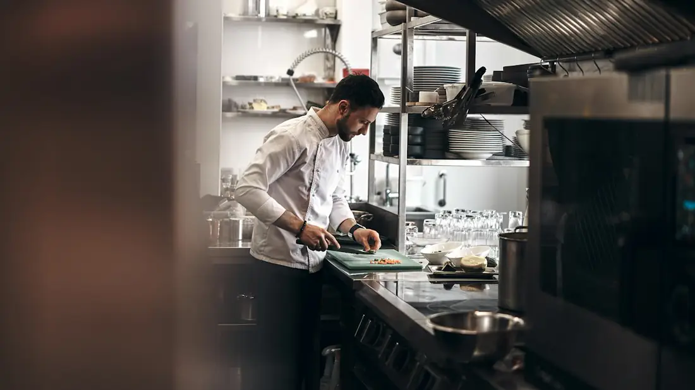
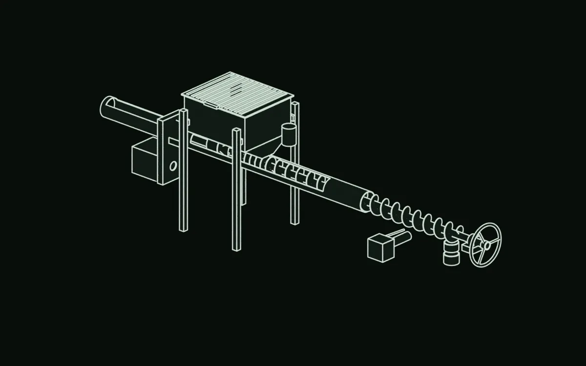
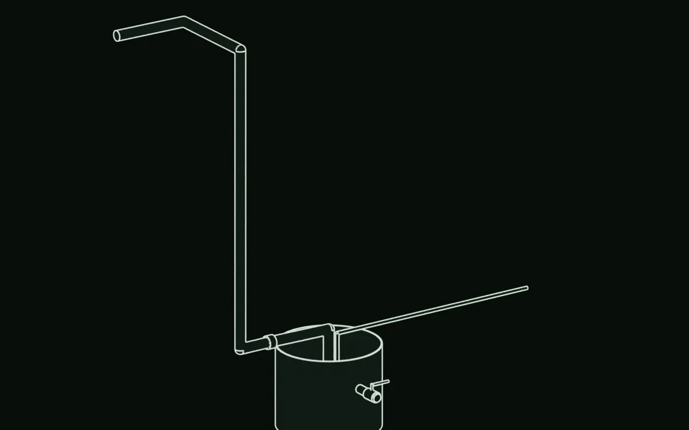
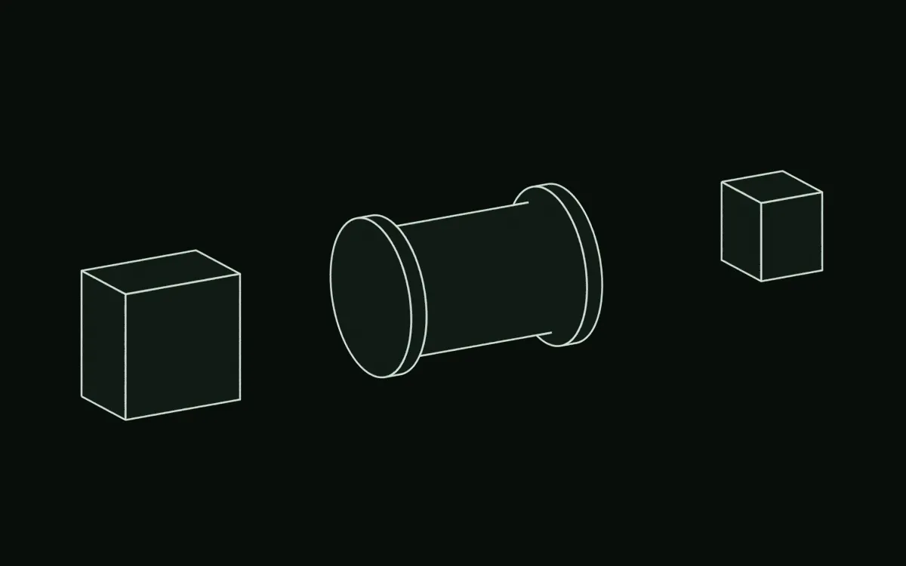
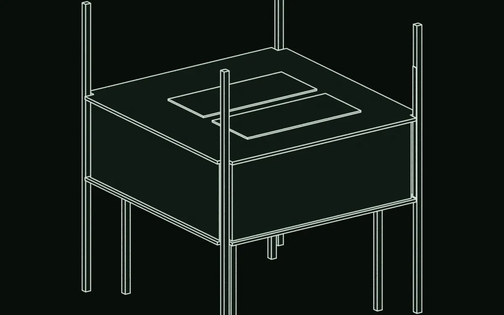
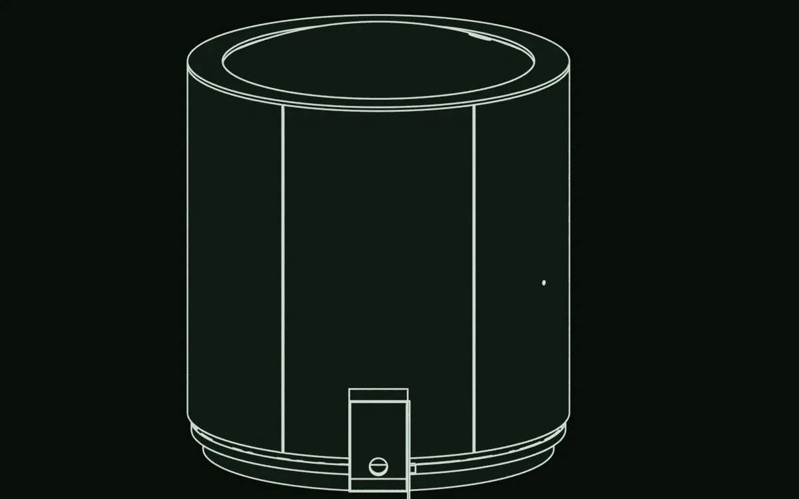
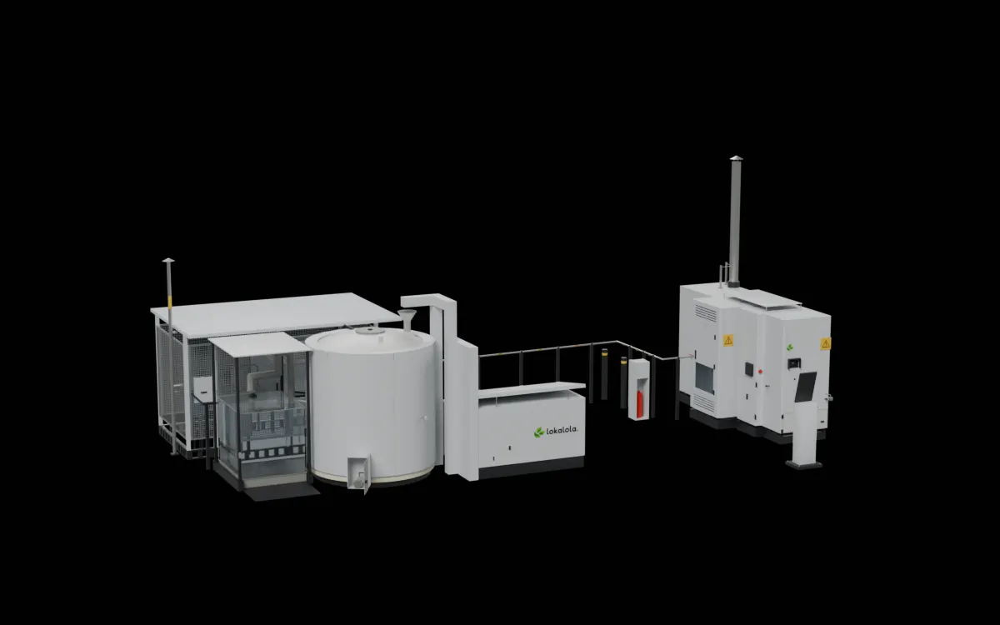
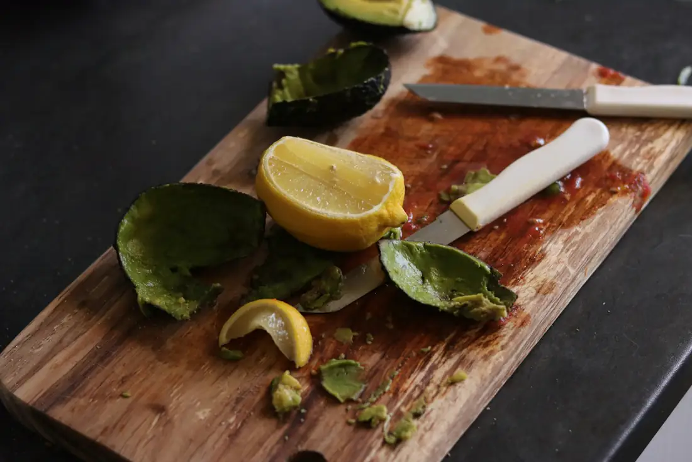
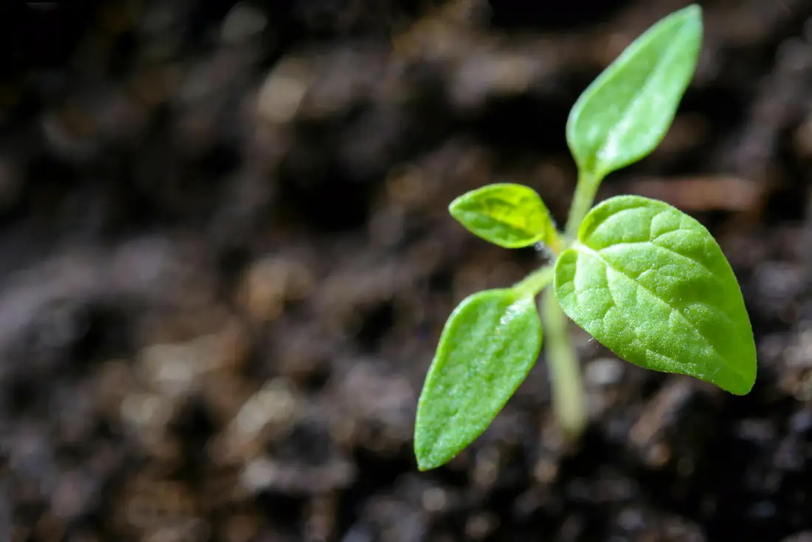

Jasa olah per kg
Rencana tarif: Rp1.000/kg untuk hotel dan Rp600/kg untuk restoran dan kafe, ditagih bulanan. Tiap klien menerima sertifikat olah bulanan dari Lokalola, berdasarkan data timbang dan proses IoT.
Managed locally, for greater energy!

Lokalola berencana mengembalikannya ke tempat yang benar: hub yang kami miliki dan kelola di Yogyakarta, tempat sampah organik hotel dan restoran diolah menjadi biochar dan pupuk, dengan sertifikat olah bulanan untuk setiap klien. Pilot 50 kg per hari lebih dulu.
Gambar mesin adalah render rancangan. Foto dan video lain adalah ilustrasi stok.

sisa makanan dalam timbulan sampah nasional, SIPSN 2024
±198 t
sampah organik per hari di Sleman (sekitar 330 t per hari, 60% organik)
Sistem Informasi Pengelolaan Sampah Nasional (SIPSN) Kementerian Lingkungan Hidup mencatat sisa makanan sebagai jenis sampah terbesar pada 2024: 39,87 persen dari timbulan, berdasarkan laporan 303 kabupaten dan kota.
Yogyakarta sedang beralih dari TPA ke pengolahan di sumber. Sejak 1 Januari 2026, depo kota hanya menerima residu, dan Sleman mendorong pengolahan organik di sumber sejak 2024. Hotel dan restoran butuh tempat untuk mengolah sampah organiknya, lengkap dengan bukti.

Tiap hotel dan restoran menghasilkan sampah organik di tempat yang sama, setiap hari.
Lokalola berencana mengolahnya bagi mereka dan membuktikannya setiap bulan.
Persentase sisa makanan: SIPSN Kementerian Lingkungan Hidup, data 2024, disampaikan Menteri Lingkungan Hidup pada 15 Maret 2025. Angka antar-rilis bergeser karena jumlah daerah yang melapor berubah. Sumber: Antara
Angka Yogyakarta dan Sleman: laporan Harian Jogja, detikJogja, dan Tribun Jogja, 2024 sampai 2026.
Lokalola memiliki dan mengoperasikan hub. Klien tidak perlu modal alat, lahan, atau operator. Semua harga di bawah masih rencana, dan belum ada klien yang menandatangani.
Rencana tarif: Rp1.000/kg untuk hotel dan Rp600/kg untuk restoran dan kafe, ditagih bulanan. Tiap klien menerima sertifikat olah bulanan dari Lokalola, berdasarkan data timbang dan proses IoT.
Rencana harga: biochar Rp5.000 sampai 12.000/kg, pupuk organik cair Rp5.000 sampai 15.000/L, kompos Rp1.300/kg. Mutu produk belum diuji lab.
Fee pelaksana program CSR, pelatihan warga, dan kunjungan edukasi di hub. Belum ada yang terkontrak.
Pemasok sampah kering tidak dibayar dan tidak membayar; mereka menerima 20% biochar. Biogas hanya memanaskan retort kami sendiri, jadi tidak ada energi yang dijual. Biochar adalah arang hasil retort. Proyeksi bauran pendapatan tahun ke-5: 20% jasa olah, 48% produk, 31% program.
Hotel dan restoran kini harus menuntaskan sampah organiknya, dan bukti angkut saja tidak menunjukkan ke mana sampah itu pergi. Klien kami direncanakan menerima sertifikat olah bulanan dari data yang ditimbang dan dicatat.
Catatan bahwa sampah dijemput, ditimbang, dan diolah, siap masuk arsip hotel atau restoran.
Laporan bulanan dan ringkasan ESG triwulanan sebagai bahan pendukung program seperti kategori Green Hotel di Wonderful Indonesia Award.
Angka yang bisa ditunjukkan: kilo sampah yang dialihkan dan estimasi emisi yang dihindari.

Sertifikat Olah Sampah Organik
Restoran Contoh · November 2027
Data timbang dan proses dari sensor IoT
Sisa makanan dan biomassa kering masuk. Biochar, pupuk cair, dan kompos keluar. Biogas dari digester memanaskan retort, jadi tidak ada energi yang dijual.

Digester, modul gas, stasiun umpan, dan retort berdiri berdekatan. Sisa makanan masuk di satu ujung, arang keluar di ujung lain.

Sisa makanan disortir di meja, dicampur air, lalu diangkat pompa ke corong di atas digester. Target: 35 kg per hari.

Tangki 5.000 liter tanpa pemanas. Bakteri menguraikan sisa makanan tanpa udara dan melepas biogas. Target: 1,8–2,0 m³ per hari.

Biogas disaring, ditampung di kantong 2,5 m³, lalu menyalakan dan memanaskan awal retort. Setelah panas, uap serpih dirancang menjaga panasnya (belum diuji). Uji B1 menjawab ini.

Arang di bin tertutup, digestat (sisa cairan digester) ke wadah 1.000 liter, dan gas sisa. Mutu arang dan digestat belum diuji.
Selang, nampan, dan warna cairan adalah ilustrasi.Tampilan penjelasan. Potongan dan warna alur adalah ilustrasi untuk menjelaskan, bukan hasil pengukuran.
Lanjut ke mesin 3DPutar model ini dan sentuh tujuh titiknya. Bentuk dan jarak mengikuti model rancangan Lokalola.

Model 3D tidak bisa dimuat di perangkat ini. Pakai daftar modul di bawah.
Gambaran kasar ukuran lewat kamera ponsel, bukan alat ukur. Jejak alat 10,1 × 6,5 m (rancangan).
Buka halaman ini di ponsel untuk mencoba AR.
Perkiraan hitung: sekitar 100 menit kerja per hari. Belum termasuk kuras endapan, perawatan, dan pekerjaan yang harus dilakukan berdua.
Pihak yang mengeringkan dan mencacah biomassa kering belum ditentukan.
Video ilustrasi: mulsa kayu, bukan serpih Lokalola.

Arang biasa, bukan hasil Lokalola.
Semua angka adalah target atau rancangan. Belum ada angka yang diukur dari mesin nyata. Kolom “Status” menyebut asal tiap angka.
| Besaran | Nilai | Status |
|---|---|---|
| Sisa makanan diolah | 35 kg per hari operasiBeroperasi 6 hari per minggu. | Target |
| Serpih kering diolah | 15 kg per hari rata-rata | Target |
| Biogas | 1,8–2,0 m³ per hariDihitung untuk suhu udara 27–28 °C; lokasi lebih dingin menghasilkan lebih sedikit. | Target · hitungan dan simulasi |
| Sesi retort | Dua hari sekali, 30 kg per sesi | Rancangan |
| Digester | 5.000 literTanpa pemanas. | Rancangan |
| Kantong gas | 2,5 m³ | Rancangan |
| Arang | Sekitar 3,8–4,5 kg per hari | Perkiraan hitung, belum diukur |
| Digestat | Sekitar 65–70 liter per hari | Perkiraan hitung, belum diukur |
| Jejak alat | 10,1 × 6,5 m | Rancangan, diukur dari model |
| Lahan dengan jalur servis | Sekitar 87 m²Sekitar 11,1 × 7,9 m. | Rancangan, diukur dari model |
| Jarak api ke peralatan penyimpan dan pengolah gas | 5,62 mSyarat rancangan: 5 m atau lebih. | Diukur dari model |
| Tinggi cerobong | 4,34 m | Rancangan |
Kami merancangnya untuk memenuhi EN 298 untuk kontrol burner dan batas paparan hidrogen sulfida Permenaker 5/2018. Rancangan menjaga api sedikitnya 5 m dari peralatan gas, memasangnya di udara terbuka, dan memakai penahan nyala api, deteksi metana, serta tombol henti darurat berkabel langsung. Kajian bahaya independen dilakukan sebelum mesin pertama kali dijalankan.
Tujuan kami adalah membangun dan mengoperasikan sistem pilot terintegrasi pertama Lokalola. Sebelum merakit keseluruhan sistem, kami memvalidasi komponen kritis yang menentukan performa, keandalan, dan keselamatannya.
Perhitungan, simulasi, dan model 3D selesai. Pengadaan B1 sedang disiapkan. Belum ada perangkat keras yang dibangun dan belum ada uji yang selesai.
Lima pertanyaan menentukan apakah pilot bisa berhasil. Retort lebih dulu; sisanya bisa paralel.

Bisakah mengubah sampah kering menjadi biochar bermutu dengan panasnya sendiri?

Bisakah menangani sisa makanan nyata setiap hari tanpa sumbat?

Apakah komponen keselamatan utama asli dan bersertifikat?

Bisakah menyimpan biogas dengan tekanan stabil, termasuk saat berangin?

Bisakah menghasilkan biogas yang cukup, dan pulih setelah berhenti dua minggu?
Kami menuliskannya di muka supaya Anda tidak perlu menebak.
Belum pernah diuji, juga belum dengan biogas.
Kajian bahaya dan zona area berbahaya belum ada. Belum bersertifikat.
Bahan dan pembangunan belum dipastikan; menunggu penawaran pemasok.
Biogas dan arang riil belum terukur; menunggu B1 dan B5.
Tanpa pengaduk terpasang; pengaruhnya pada gumpalan dan endapan belum diuji.
Suku cadang, servis, bahan habis, dan biaya operasi belum ditetapkan.
Belum dikaji.
Rancangan mengasumsikan serpih 20 mm atau lebih kecil. Pihak yang menyiapkan dan mengangkutnya belum ditentukan.
Mutu dan izin pemakaian sebagai pupuk belum diuji.
Ventilasi jaring modul gas, kulit retort, dan suhu ruang katup menunggu data.
Tarif masih rencana dan belum diuji ke klien.
Volume, mutu sampah, dan pihak yang menjemput atau mengantar belum pasti.
Spesifikasi mutu dan pembeli belum dipastikan.
Kampus tuan rumah dan lahan hub belum disepakati.

Setelah hasil uji masuk, semua bagian disatukan menjadi satu pilot. Datanya menentukan langkah berikutnya.
Semua bagian menjadi satu sistem.
Start-up pertama, diperiksa menyeluruh.
Sampah nyata masuk. Data nyata keluar.
Dimulai dari pilot 50 kg per hari.
Satu titik setara 1 kg per hari. Target rancangan, bukan hasil.

±2.044 t
sampah organik tidak masuk TPA
±204 t
biochar yang dihasilkan

±1.059 t
CO₂e dihindari atau tersimpan
Estimasi 10 tahun dari model keuangan kami untuk satu pilot dan satu hub. Belum diukur.
Wawancara dan timbang sampah di 20 sampai 30 lokasi, 5 surat minat, dan kampus tuan rumah.
35 kg basah dan 15 kg kering di kampus tuan rumah. Data proses, uji lab, dan 10 surat minat.
Di lahan CSR koridor Sleman. Baru dimulai setelah data pilot, surat minat, dan lahan tersedia.
Hub lain di Yogyakarta, lalu Bandung dan Bali. Di luar model keuangan saat ini; butuh pendanaan baru.
Tanggal adalah estimasi tim. Spesifikasi di halaman ini menggambarkan Pilot; rancangan Hub difinalkan selama pilot.
Kami mencari hotel, restoran, dan kafe di Yogyakarta, serta pemasok daun dan ranting kering, yang bersedia bekerja sama sejak tahap paling awal. Kami akan menimbang sampah di 20 sampai 30 lokasi sebelum pilot. Ceritakan apa yang Anda buang, berapa banyak, dan di mana lokasi Anda.
Kami juga mencari investor dan mitra CSR. Investor dapat mendukung putaran pre-seed Rp380 juta yang membawa kami ke data pilot dan hub yang siap dibiayai. Mitra CSR dapat menyediakan lahan hub di koridor Sleman atau menjalankan program dampak bersama kami. Lihat rincian untuk investor.
Setelah Anda mendaftar, kami menghubungi Anda untuk berbincang. Belum ada jadwal dan belum ada penawaran.
Belum ada layanan atau imbalan yang bisa kami janjikan. Yang kami tawarkan baru percakapan terbuka tentang kecocokan sampah, pendanaan, atau program Anda.
Aplikasi email Anda akan terbuka dengan pesan siap dikirim.
Kontak resmi belum disambungkan. Salin pesan di bawah dan kirim sendiri.
Operasi dan keuangan · Teknik Industri
Project Lead Bio-CNG Supply Chain dan Site Selection, Pertamina NRE Case 2026. Menyusun model keuangan 10 tahun.
IoT dan kelistrikan · Teknik Elektro
Gold Poster dan Silver Presentasi, PIMNAS 2025. Electrical dan Embedded Systems, Gamantaray UGM.
Produk dan perangkat keras · Teknik Biomedis
Gold Poster dan Silver Presentasi, PIMNAS 2025. Memimpin desain digester dan retort, pilot, serta uji lab.
Kami belum punya rekam jejak operasi persampahan, jadi kami mencari operator senior dan penasihat teknik lingkungan.
Rp380 juta untuk mencapai data pilot, 10 surat minat, dan hub yang siap dibiayai.
Dari model 10 tahun kami untuk satu pilot dan satu hub, dengan paket biaya hemat dan harga Base. Ini proyeksi: pilot, surat minat, dan pendapatan belum ada.
Rp636 jt
proyeksi pendapatan tahun ke-5
46%
proyeksi margin EBITDA tahun ke-5
±4,9 thn
proyeksi balik modal atas total Rp885 jt
Laba bersih mulai tahun ke-2, IRR sekitar 24% selama 10 tahun. Mengasumsikan lahan hub dari mitra CSR tanpa sewa. Pendapatan kredit karbon tidak dihitung.
Rentangnya lebar. Pada kasus Target, balik modal sekitar 3,8 tahun. Pada kasus Konservatif, balik modal lebih dari 10 tahun dan IRR negatif. Penjualan produk (48%) dan program (31%) adalah pendapatan yang paling belum terjamin, jadi surat minat dari pembeli dan mitra CSR masuk rencana.
Taruhan teknis kami: panas dari uap serpih cukup untuk menjaga retort tetap berjalan. B1 yang menentukannya.
Pada 5 kg serpih per jam, api utama diturunkan ke api kecil, dan dinding tabung tetap di atas 420 °C selama minimal dua jam.
Target: 30 MJ atau kurang, setara sekitar 1,5 m³ biogas. Hitungan saat ini: 32–38 MJ, jadi target ini menantang.
Setelah lima sesi, masing-masing 30 kg, lubang uap masih terbuka minimal 80 persen, motor tidak macet, dan tidak ada tar menggumpal di hopper.
Diuji di laboratorium. Target: zat mudah menguap 25 persen atau kurang, dan karbon tetap 65 persen atau lebih.
Ringkasan; kriteria lengkap ada di rencana uji B1.
Bila hasilnya buruk: jika Q1 gagal tipis, kami menaikkan laju umpan atau menambah penahan panas. Jika gagal jauh, kami kembali ke desain drum, yang butuh sekitar 45 kg sisa makanan per hari, bukan 35. Artinya, pasokan yang harus kami amankan bertambah.
Kami menggalang pre-seed Rp380 juta untuk runway sekitar 16 bulan, lalu Rp505 juta untuk aset hub di akhir tahun ke-1.
Kami juga mencari:
Bisakah hotel atau restoran Anda menjadi klien pertama kami? Dukung kami.

Model keuangan 10 tahun dan rencana uji kami bagikan atas permintaan. Hasil uji belum ada.
Kontak resmi belum disambungkan. Tautan ini akan aktif setelah pemilik mengisi kontak.